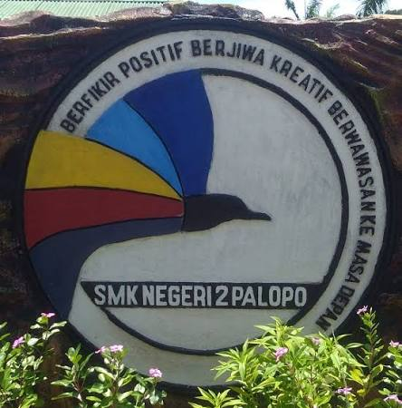

Membangun generasi muda yang kompeten, berkarakter, kreatif, dan siap menghadapi dunia kerja.

Informasi mengenai sekolah dan berbagai kegiatan yang ada di SMKN 2 Palopo.
SMKN 2 Palopo merupakan salah satu sekolah menengah kejuruan yang memberikan pendidikan dan keterampilan kepada peserta didik sesuai dengan bidang keahlian yang dipelajari.
Melalui pendidikan kejuruan, siswa diharapkan dapat mengembangkan pengetahuan, keterampilan, kreativitas, serta karakter yang dibutuhkan untuk melanjutkan pendidikan maupun memasuki dunia kerja.
SelengkapnyaPembelajaran yang mengembangkan pengetahuan dan keterampilan sesuai bidang keahlian.
Membekali siswa dengan keterampilan yang dapat diterapkan dalam dunia kerja dan kehidupan.
Mendukung pengembangan potensi, kreativitas, dan karakter peserta didik.
Kenali berbagai bidang keahlian yang tersedia.
Informasi mengenai program keahlian dapat ditampilkan di sini.
Informasi mengenai program keahlian dapat ditampilkan di sini.
Tambahkan program keahlian sesuai data resmi sekolah.
Temukan informasi mengenai profil, jurusan, kegiatan, dan informasi sekolah lainnya.
Hubungi Kami